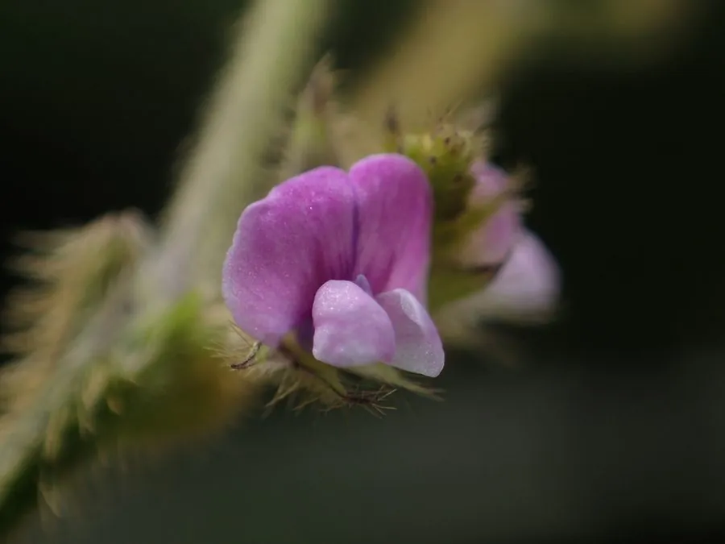

农作物与经济植物 · 植物界
大豆 Glycine max

大豆富含蛋白质和油脂，可制成豆浆、豆腐、酱油和食用油，其根瘤还能固氮养地，是重要的经济作物。
- 分类
- 门被子植物门纲双子叶植物纲目豆目科豆科属大豆属
- 栖息环境
- 温带与亚热带平原，喜温暖、光照充足和排水良好的壤土
- 地理分布
- 原产中国，现主产于中国、美国、巴西、阿根廷等国
- 保护级别
- 暂无评估（栽培作物）
物种志
大豆是一年生草本，株高 0.5–1.5 m，全株密生褐色或灰色茸毛。叶为三出复叶，小叶宽卵形，边缘全缘。花小，蝶形，白色或淡紫色，自花授粉。荚果扁平，密被茸毛，内含 2–5 粒种子，种子圆球形，颜色有黄、青、黑、褐等，种脐明显。根系上着生许多根瘤，里面有共生的根瘤菌，能固定空气中的氮。
大豆原产中国，栽培历史已有数千年，古代称“菽”，是五谷之一；19 世纪传入欧美后成为世界性作物。它喜温暖、光照充足，适宜在排水良好的壤土中生长。大豆种子含蛋白质约 35%–40%、脂肪约 18%–20%，是植物蛋白和食用油的重要来源，可加工成豆浆、豆腐、豆酱、酱油、豆油等；豆粕是优质饲料。根瘤菌固氮还能提高土壤肥力，因此常与玉米等轮作。
形态与习性
- 株高0.5–1.5 m，全株有茸毛
- 叶三出复叶，小叶宽卵形
- 花蝶形花，白色或淡紫色
- 种子蛋白质约 35%–40%，脂肪约 18%–20%
- 根瘤与根瘤菌共生，能固定空气中的氮
- 主要用途豆制品、豆油与豆粕饲料
- 原产地中国
趣味知识
- 大豆古称“菽”，与稻、黍、稷、麦并称“五谷”。
- 大豆根上的根瘤是根瘤菌的“住所”，能把空气里的氮变成肥料。
- 同样重量下，大豆的蛋白质含量远高于大米和小麦。